YEE AI 智能大赛 2.0 · 作品说明（v0.7）
参赛方向：方向 1 内部提效，可平移方向 2 对外赋能。作品形态：Skill + AI Agent 工作流，已在真实展会跑通，规划演进为 SaaS 平台。
关键点摘要
| 评分维度 | 结论 | 关键证据 |
|---|---|---|
| 商业价值 | 内部自用、部门复制、对外产品化三段路径清晰，第一段已有可复用交付物 | 会后复盘引擎上架公司 SkillHub，同事安装即用；对外版本面向出海企业的跨文化获客，按坐席或按项目订阅 |
| 使用情况与可行性 | 2026 年 9 月单次迪拜行程同期参加三场活动，端到端跑通，非演示数据 | 三场活动、14 场展会 App 约见、8 场确认并落日历、12 个会话全量回收、4 条新线索全部补联 |
| 可量化收益 | 单次展会会后整理从 1–2 人日压缩至 0.5 小时 | 整理工时下降约 90%；按 20 人团队、年均 4 次展会测算，年节省约 120 人日 |
| 创新性 | 用证据链与日历锚点解决线索失真，用跨文化、时区地理、国际合规构成出海差异化 | 渠道显示已约但日历无记录即判定未会面；AI 评分可解释，信息分「已确认 / AI 推断 / 缺失」三态 |
| 可访问性 | 外网直接访问，无需登录，正文与截图对人和 Agent 均可读 | https://jasmine2886.github.io/yeesales/ |
三个数字概括：3 场活动验证、8 场会面落地、90% 整理工时下降。
1 产品定位
YeeSales 不是一个记录型 CRM。它把销售从「找线索、约见面、写纪要、追跟进」的重复劳动中解放出来，由 AI 判断下一步该做什么，并直接把动作落到日历、任务和邮件草稿上。

产品分三层，见图 1。
| 层级 | 内容 |
|---|---|
| AI 层 | AI Command Center 一句指令贯穿全程；AI Agent 工作组承担线索研究、会面记录、跟进撰写、展会复盘、账户分析；可信机制包括可解释评分、信息三态、审批队列与审计日志 |
| 业务层 | 六大分组覆盖销售全生命周期：销售驾驶舱、线索获取、展会情报与行程规划、客户全景、商机与路线图、AI 工作台与集成 |
| 数据层 | 九源素材统一采集，落为标准化实体，输出到 Web 工作台、飞书任务与日历、企业邮箱草稿 |
九源指九类沟通痕迹：S1 协作平台日历（事实锚点）、S2 AI 语音纪要、S3 WhatsApp、S4 展会 App、S5 协作平台 IM、S6 外部邮箱、S7 协作平台邮箱、S8 协作平台任务、S9 拜访台账。后文证据出处沿用该编号。
2 开发背景
国际展会与客户拜访的工作流高度一致：找线索、约见面、现场沟通、会后跟进。沟通痕迹散落在九个渠道，漏一个渠道就丢一条线索。四个具体问题：
| 编号 | 问题 | 影响 |
|---|---|---|
| 2.1 | 联系人流失 | 现场临时结识、邀请过期、消息未回的对象缺乏记录，而这批人转化概率并不低 |
| 2.2 | 整理耗时 | 会后逐渠道人工翻查，单次展会约 1–2 个工作日，线索热度在此期间衰减 |
| 2.3 | 现场受限 | 出差期间电脑关闭，移动端无法进入工作台，只能语音口述，回程仍需二次整理 |
| 2.4 | 口径不一 | 客户自报数据、现场口头承诺、台账记录互相对不上，缺少交叉核验 |
通用 CRM 解决的是「记录」，解决不了「下一步做什么」。销售易的切入点是把判断和动作一起交付。
3 六大模块
| 分组 | 包含视图 | 解决的问题 | 关键能力 | 状态 |
|---|---|---|---|---|
| 3.1 AI Sales Cockpit 销售驾驶舱 | AI Sales Cockpit | 今天先做哪件事 | 按预期影响排序的 AI 建议、证据链接、Pipeline 分布、最近互动、逾期提醒 | 已上线 |
| 3.2 Lead Generation 线索获取 | Lead Generation | 线索从哪里来 | 展会、网络检索、社交媒体、熟人转介绍四路汇入；去重、评分与首次触达建议 | 已上线（展会与转介绍）、规划中（批量检索） |
| 3.3 Event Intelligence 展会情报 | Event Intelligence、Travel Planner | 一次展会如何变成资产 | 五页签复盘（总览 / 客户分级 / 会议洞察 / 行动中心 / 报告）；行前行程规划（航班住宿、客户分布、动线） | 已上线 |
| 3.4 Customer 360 客户全景 | Customer 360 | 这个客户到底聊过什么 | 单客户时间线（邮件、聊天、会议、任务）、人脉图谱与决策链 | 已上线 |
| 3.5 Pipeline & Roadmap 商机与路线图 | Pipeline、Deal Roadmap | 商机卡在哪一步 | 看板按阶段推进、甘特按时间线排布、45 天成交路线图、阶段静默预警 | 已上线 |
| 3.6 AI Workforce 与集成 | AI Workforce、Integrations | 复盘如何变成动作 | Agent 活动中心、审批队列、审计日志；邮箱、日历、飞书集成状态 | 已上线（模拟执行）、规划中（外部写入） |
六个分组共享同一套证据与实体，不做数据二次录入。客户在一个视图补的信息，其余视图立即生效。
4 标杆功能：Event Intelligence 展会情报
多数展会工具止步于「生成一份 Word 报告」。销售易把展会后处理做成可运营的模块，五个页签对应五类决策。
| 页签 | 面向的问题 | 输出 |
|---|---|---|
| Overview | 这次展会值不值 | 识别公司数、商务互动数、合格商机数、跟进动作数；AI 绩效指标与执行摘要 |
| Account Intelligence | 先跟谁 | 客户按 AI Fit Score 排序，附 A / B / C 分档、负责商机、阶段与下一步动作 |
| Meeting Insights | 现场谈了什么 | 逐场会议的结构化要点、卡点、承诺事项、待确认信息 |
| Action Center | 谁来做、何时做 | 待审批写入项逐条列出，可接受、编辑或拒绝；审计日志记录每条 AI 动作 |
| Reports & Export | 如何向上汇报 | 管理层报告、BD 复盘报告、结构化数据导出，可生成飞书文档 |
AI Fit Score 为可解释加权评分，满分 100：战略契合 25%、中国收单需求 25%、交易体量潜力 20%、牌照与合规就绪度 15%、互动与购买意向 15%。每项给出证据来源与得分依据，销售可覆写，覆写须填理由并留痕。
信息三态贯穿全流程：已确认（有原文或凭证）、AI 推断（附置信度，需人工确认）、缺失（显式标注为空）。三者用不同颜色区分，避免 AI 猜测被当成事实写进 CRM。
人工审批卡在关键写入点：新建公司、新建联系人、商机与金额、阶段推进、对外邮件五类动作必须由 BD 确认后才落库或发出。审批队列支持批量批准，审计日志只追加不修改。AI 可以起草，不能替人承诺。
标准化实体支撑上述能力：Event、EventAccount、Company、Contact、SourceRecord、Meeting、Insight、Opportunity、Task、EmailDraft、DebriefReport、Approval。全部以稳定 ID 关联，每条 AI 提取值保留来源与置信度，重要变更留审批与操作日志。
5 实战验证
2026 年 9 月，一次迪拜行程同期参加三场活动，用同一套流程完成会前、会中、会后全链路。
| 指标 | 结果 | 口径 |
|---|---|---|
| 同期活动 | 3 场 | Seamless Middle East（9/23–24）、Forex Expo Dubai（9/22–23）、MEA Finance Leaders in Payments（9/22） |
| 会前目标名单 | 20 人、8 阶段现场动线 | 基于官方议程与公开资料生成，附逐人背景与开场话术 |
| 展会 App 约见 | 14 场 | 4 场已确认、10 场待确认，全部纳入日历与台账 |
| 最终确认并落日历 | 8 场 | 展会 App 与邮件两条确认渠道 |
| App 会话回收 | 12 个会话全量 | 其中 8 场回填至日历备注，会面前即可查阅线上沟通内容 |
| 新增可跟进线索 | 4 条 | 无日历记录但存在实质沟通，全部进入补联清单 |
| 会后整理工时 | 1–2 人日 → 0.5 小时 | 同一人、同一批素材，含跟进表、任务、日历与台账 |
| 外发脱敏 | 25 项敏感词零命中 | 自用版与外发版双产出 |
未成行的约见（对方改期、展位变更、邀请过期）同样留痕并转入补联，不计入成果。这一点是口径问题，也是可信度问题。
6 商业价值与路径
| 阶段 | 对象 | 形态 | 状态 |
|---|---|---|---|
| 6.1 内部自用 | 本人及海外子公司部 | Skill + Agent 工作流，单次展会端到端 | 已跑通 |
| 6.2 部门复制 | 全易宝 BD / 销售 | SkillHub 分发，按业务线配置接入层 | 可复制，待推广 |
| 6.3 对外产品化 | 出海企业（支付、金融科技、制造业）与展会主办方 | SaaS 订阅，按坐席或按项目计费；跨文化获客、多渠道跟进、合规初筛三个增值模块 | 规划中 |
投入产出：
- 直接可量化：单次展会节省约 1.5 人日。按 20 人团队、年均 4 次展会或差旅测算，年节省约 120 人日。
- 杠杆部分：追回一条高价值未联系线索的转化收益，超过全部整理工时投入。
- 边际成本：新增使用者仅需安装 Skill 并配置数据源，无额外服务器与实施成本。
对外版本的差异化不在「再多一个 CRM」，而在三件出海企业普遍缺失的能力：跨文化沟通判断、时区与差旅编排、国际合规与数据脱敏。这三项在内部场景已验证，迁移到外部客户无需重构。
7 创新性
- 7.1 证据链与日历锚点：以出差期间日历（含现场补记）为最高优先级事实源。渠道显示已约但日历无记录，默认未会面；同一对象在多渠道出现时按优先级合并。机制上避免把计划、意向与成果混为一谈。
- 7.2 跨文化判断而非时区查询：全球节假日日历内嵌排会流程。每个节日先判定语气类型（可祝贺 / 仅致意 / 宗教固定用语），配伊斯兰问候礼仪、斋月不约白天、同名节日按国别覆盖等规则。目标不是查日期，而是判断当天该说什么、不该说什么。
- 7.3 可解释 AI 与三态信息：评分逐项给依据，信息按可信度分三态，关键动作人工审批。AI 提速，人保留决定权，这套约束写进产品结构而非使用规范。
- 7.4 复盘即资产：展会结束不是流程终点。九源回收、跟进包、邮件草稿、任务与甘特图在同一次操作中完成，复盘结果直接进入下一轮获客。
8 可访问性与交付物
- 产品原型（外网，无需登录）：https://jasmine2886.github.io/yeesales/ ，含作品导览、作品说明全文、9 个可交互视图，支持
#event、#roadmap、#travel等深链。界面为英文产品语言，正文与文档为中文。 - 会后复盘引擎：公司 SkillHub 海外分公司空间，版本 v1.0.5，同事安装即用。
- 全球节假日与文化日历：28 个国家和地区、402 个全天事件、179 条文化知识条目、15 条国别覆盖规则，含三语气框架、伊斯兰问候礼仪、补假规则与话题护栏。
随本文档提交的截图来自产品原型，客户名称统一为代称，联系人、金额、费率、额度均为虚构或以遮蔽块表示，不含真实客户信息。
9 边界与下一步
| 事项 | 当前状态 | 说明 |
|---|---|---|
| 原型中的 AI 动作 | 模拟演示 | 界面展示的检索、评分、草稿、任务创建为演示流程，不触发真实外部调用 |
| 已真实执行的部分 | 会前名单、约见排期、日历落地、九源回收、跟进表与任务 | 见第 5 节，可逐条回溯 |
| 下一步 | 线索获取的批量检索、审批流全线贯通、SaaS 多租户 | 按季度推进，先在业务一组内验证再外推 |
附录 A 口径说明
- 客户一律使用代称；报价、额度、联系方式不出现在本文档。
- 「已上线 / 规划中」为如实标注，均可在第 3 节与第 8 节核对验证方式。
- 第 5 节数据取自 2026 年 9 月 20 日至 26 日迪拜行程的日历、展会 App、邮箱与台账记录。
- 脱敏审计（2026-11-10）：随作品提交的两份 Skill 从公司 SkillHub 拉取线上包逐一核对，确认无客户名称、无个人联系方式、无本机路径、无凭据；本文档与网页原型通过同等敏感词扫描。
附录 B 系统截图
见图 1 至图 12（文末）：产品蓝图、销售驾驶舱、线索获取、行程规划、展会情报总览、客户分级、行动中心与审计日志、商机看板、成交路线图、AI Agent 活动中心、客户 360、集成状态。
系统截图
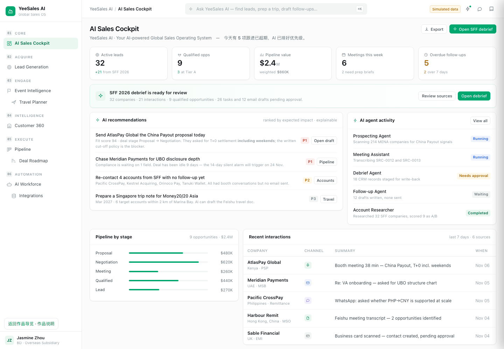
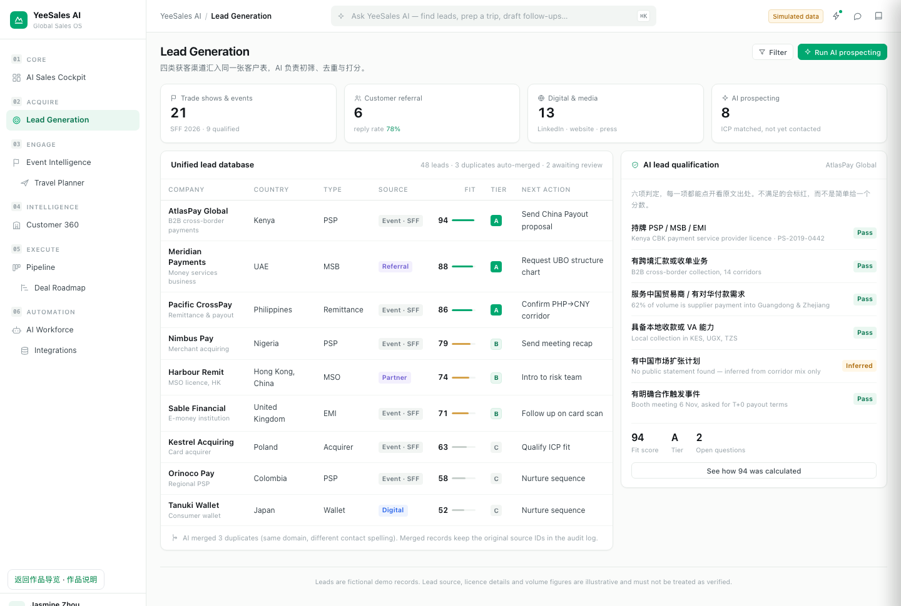
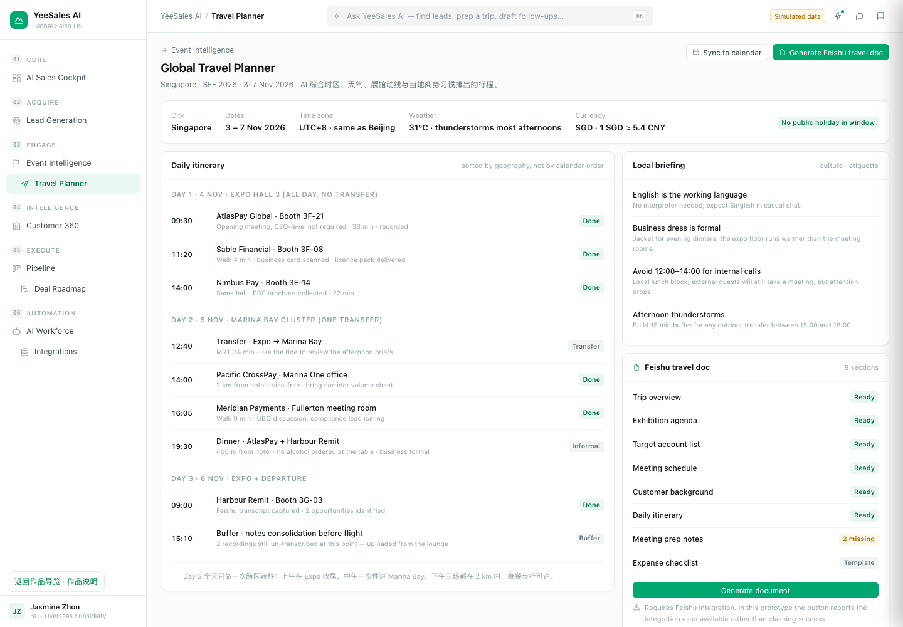
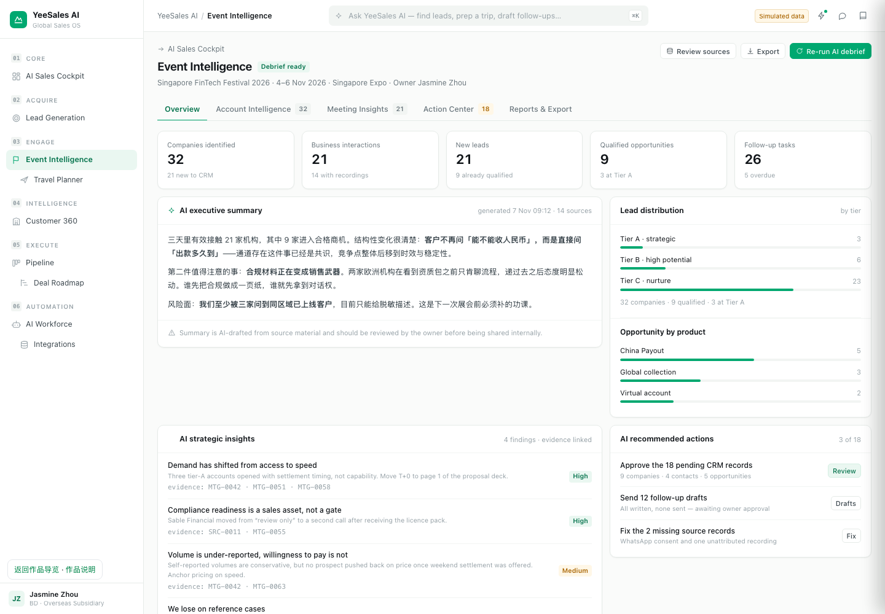
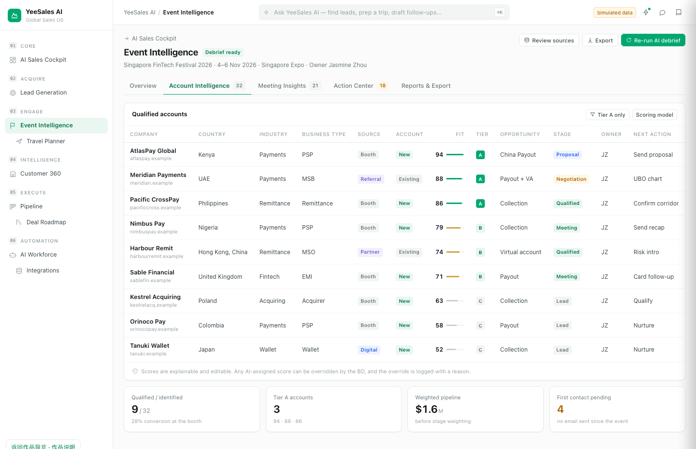
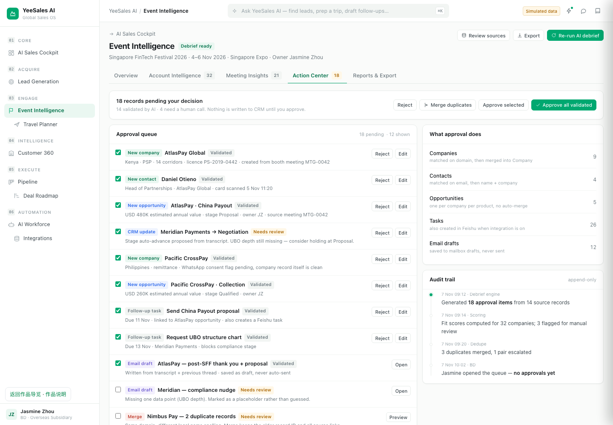
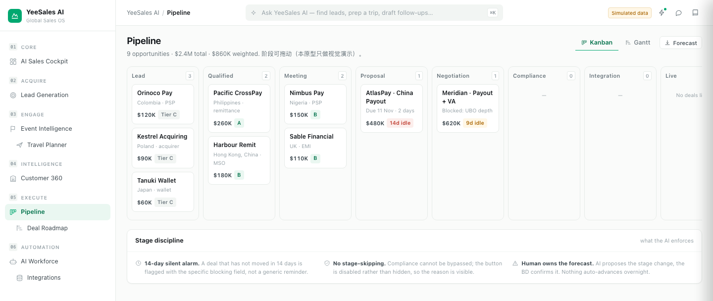
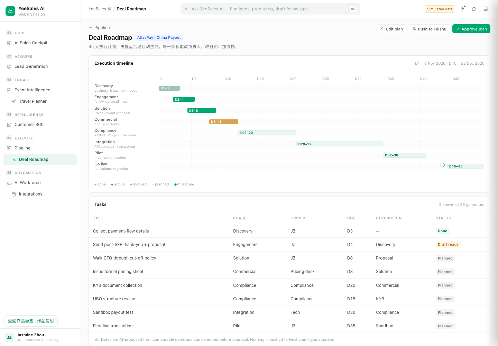
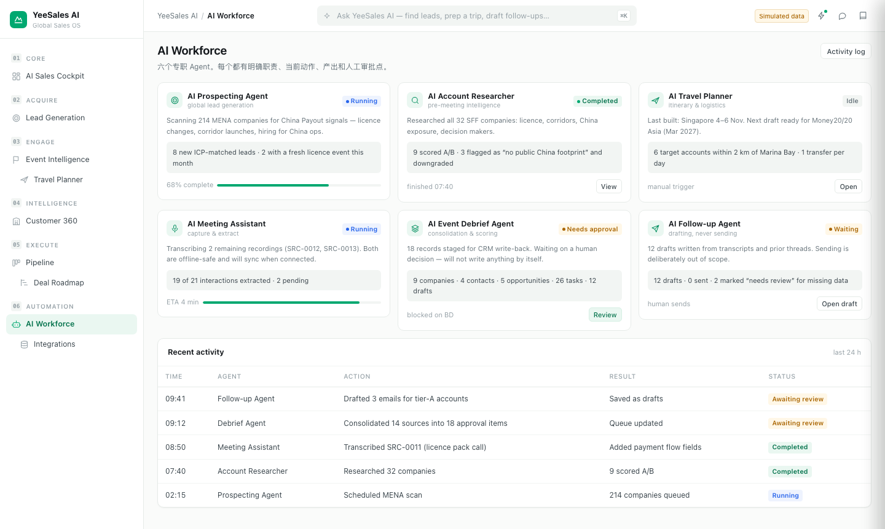
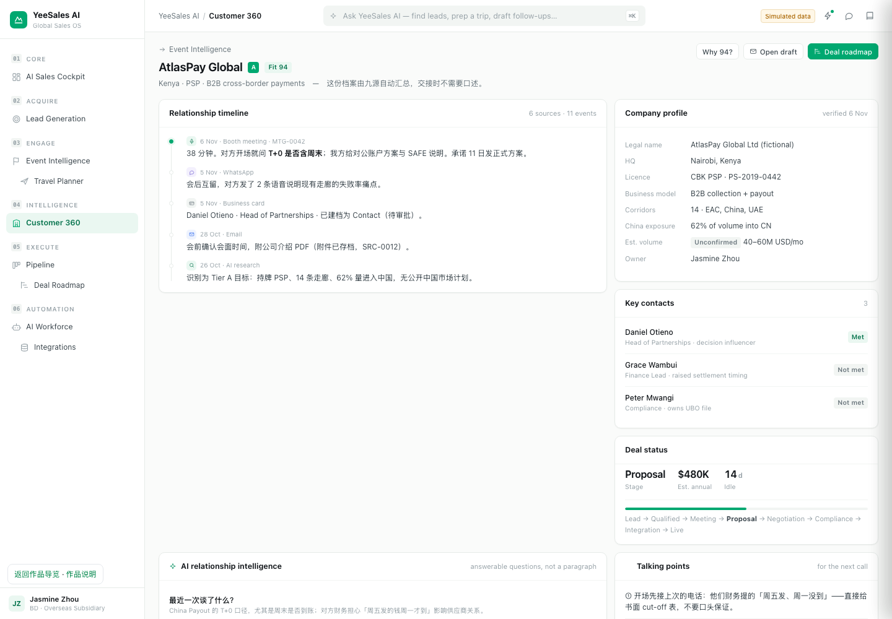
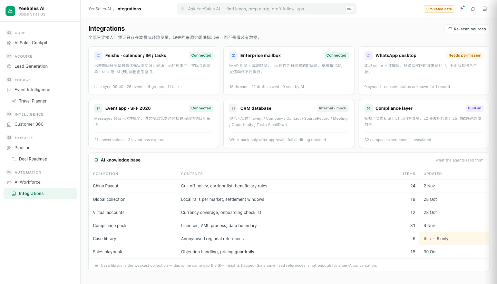